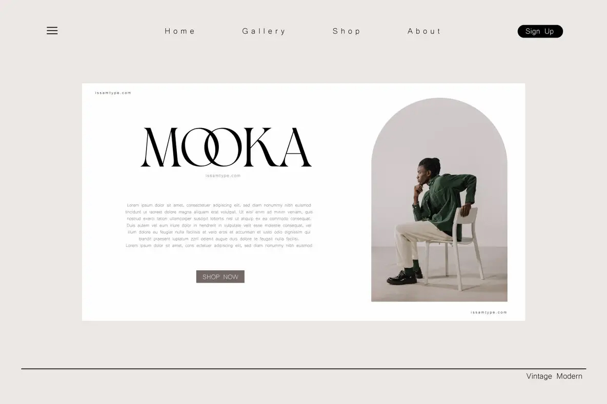

A display of Bomiro type in use—elegant, sharp, and suited for high-impact visual storytelling. Showcasing Bomiro in a minimal layout to highlight its clean forms and typographic rhythm.A single red daisy held against the light, casting a dramatic shadow—an interplay of natural form and graphic typography.

A conceptual e-commerce homepage for 'mookah' balancing editorial photography with vintage-modern type design.Perfect for magazine publications, Bomiro offers a unique flair to help you stand out. Bomiro in use: displaying its refined curves and calligraphic influence in a bold headline treatment.The Bomiro typeface in a branding context, demonstrating its versatility in editorial and lifestyle design.The stunning Bomiro alphabet is completed with a full range of capitals, lower case, and symbols.